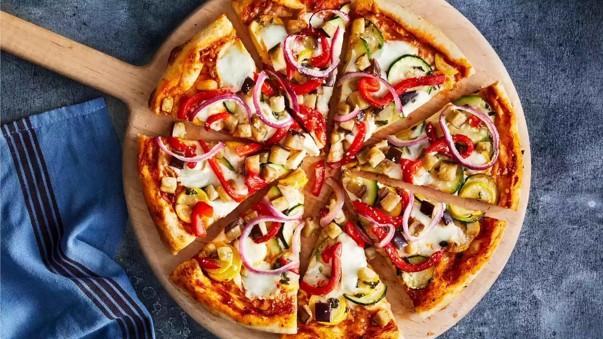

Quick and Easy Pizza Crust

This is a great recipe when you don't want to wait for the dough
to rise. You just mix it and allow it to rest for 5 minutes and then it's ready to go! It yields a soft, chewy crust.
Pizza Crust Ingredients
- Yeast Active dry yeast is a leavening agent, which means it's the ingredient that causes the pizza dough to rise.
- Sugar To activate your yeast, you'll need to dissolve it in warm water with a teaspoon of sugar. The sugar gives the yeast something to eat and speeds
up the activation process. You'll know your yeast is active when it becomes bubbly and frothy on top.
- Bread Flour Bread flour is ideal for pizza crust becauseit creates chewier results than all-purpose flour. This is because it contains more protein, which helps produce lots of gluten. Gluten is what gives the crust elasticity.
- Olive OilOlive oil serves a couple purposes when it comes to pizza crust: Not only does it add color and flavor, but it creates a barrier between the oil and water. This oily barrier prevents sogginess.
- SaltA little bit of salt goes a long way. Salt adds flavor, strengthens the gluten (creating a chewier crust), and slows down fermentation (resulting in a better rise).